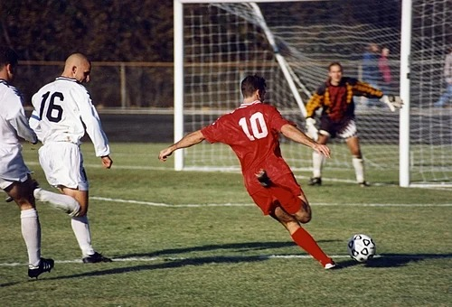
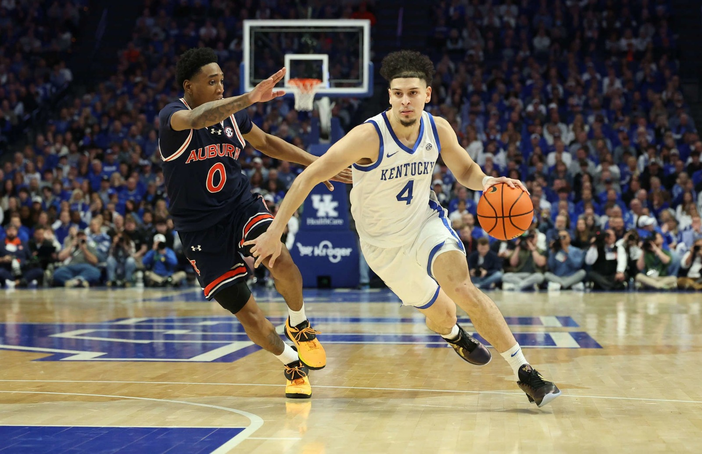
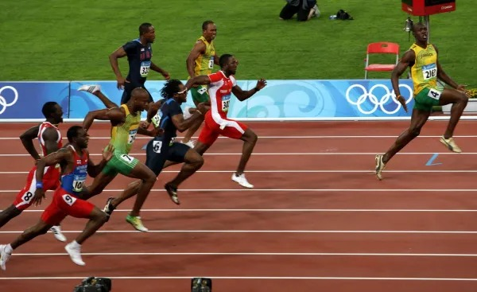

Noticia 1: Victoria del Junior de Barranquilla
El equipo local ganó su último partido con un marcador de 3-0, demostrando un gran desempeño en defensa y ataque.


Su pagina deportiva de confianza
Somos una empresa dedicada a brindar informacion deportiva de calidad, con el objetivo de mantener a nuestros usuarios informados sobre las ultimas noticias, resultados y eventos deportivos a nivel mundial.
El equipo local ganó su último partido con un marcador de 3-0, demostrando un gran desempeño en defensa y ataque.
El legendario velocista Usain Bolt estableció un nuevo récord mundial en los 100 metros planos, con un tiempo de 9.58 segundos, consolidando su lugar como el hombre más rápido del mundo.


El fútbol es el deporte más popular del mundo, con millones de seguidores en todo el planeta. Se juega entre dos equipos de once jugadores cada uno, y el objetivo es marcar más goles que el equipo contrario.

El baloncesto es un deporte dinámico y emocionante que se juega entre dos equipos de cinco jugadores cada uno. El objetivo es encestar el balón en el aro del equipo contrario para anotar puntos.

El atletismo es un conjunto de disciplinas deportivas que incluyen carreras, saltos y lanzamientos. Es uno de los deportes más antiguos y se practica en todo el mundo, con eventos como los Juegos Olímpicos siendo el escenario principal para los atletas de élite.
Resultados de los equipos en la liga local de futbol.
| Equipo | Puntos |
|---|---|
| Junior de Barranquilla | 21 |
| Fortaleza | 21 |
| Bucaramanga | 20 |
| Deportes Tolima | 20 |
| Medellin | 20 |
| Llaneros | 18 |
Resultados de los equipos en la liga local de baloncesto.
| Equipo | Puntos |
|---|---|
| Boston Celtics | 30 |
| New York Knicks | 28 |
| Milwaukee Bucks | 25 |
| Cleveland Cavaliers | 22 |
Resultados de los atletas en la última competencia de atletismo.
| Atleta | Disciplina | Resultado |
|---|---|---|
| Usain Bolt | 100 metros planos | 9.58 segundos |
| Allyson Felix | 200 metros planos | 21.69 segundos |
| Eliud Kipchoge | Maratón | 1:59:40 horas |
En esta sección encontrarás una selección de imágenes relacionadas con los deportes populares.



Responde las siguientes preguntas para poner a prueba tus conocimientos deportivos.
Completa el siguiente formulario sobre tus gustos
Aqui tendras enlaces para saber mas de cada una de las categorías deportivas.